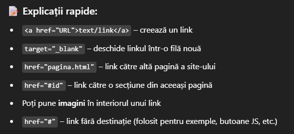
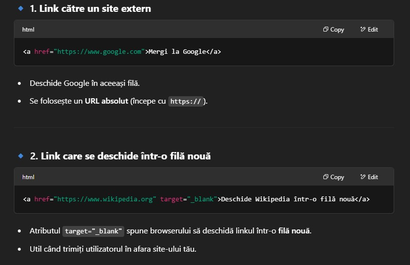
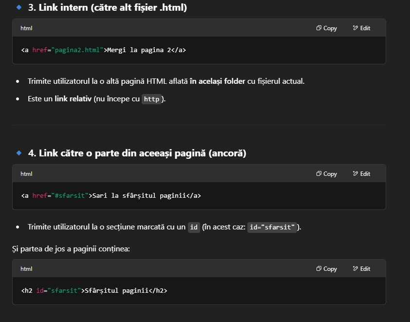
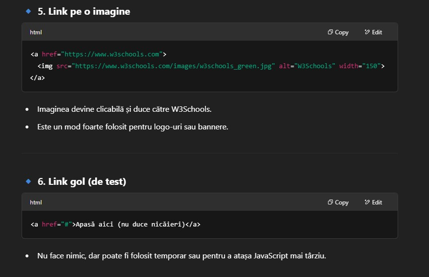

Legături (linkuri) în HTML
HTML folosește tagul <a> pentru a crea legături. Atributul principal este href care indică destinația.
1. Link către un site extern
Mergi la Google
2. Link care se deschide într-o filă nouă
Deschide Wikipedia într-o filă nouă
3. Link intern (către alt fișier din același site)
Mergi la HtmlBasics
(Asigură-te că ai un fișier numit pagina2.html în același folder)
4. Link către o parte din aceeași pagină (ancoră)
Sari la sfârșitul paginii
Poți crea un punct de ancorare în pagină folosind atributul id.
5. Link pe o imagine

6. Link gol (folosit adesea pentru teste sau meniuri)
Apasă aici (nu duce nicăieri)
Sfârșitul paginii
Ai ajuns la sfârșit printr-un link intern.

Explicatii


